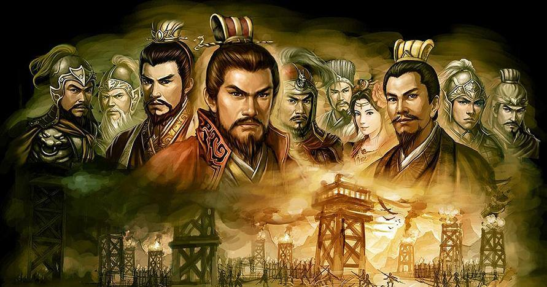

Cứ theo truyền thuyết Trung Hoa thì kẻ sanh trước loài người là ông Bàn Cổ làm chúa thiên hạ. Kế đó là vua Thiên Hoàng, Ðịa Hoàng và Nhơn Hoàng, gọi là Tam Hoàng. Rồi đến vua Phục Hi, Thần Nông, Huỳnh, Nghiêu và Thuấn gọi là Ngũ Ðế.
Thuở ấy, Trung quốc chia làm bốn châu: Ðông Thắng Thần châu, Tây Ngưu Hạ châu, Nam Thiện Bộ châu, Bắc Cư Lư châu.
Ðặc biệt là nơi ven biển lại có một nước tên Ngao Lai. Trong nước ấy có một hòn núi gọi là Hoa Quả Sơn (Núi có nhiều thứ hoa quả lạ) đứng sừng sững giữa trời, bao phủ đồi cây gò đất. Trong cảnh hùng tráng âm u ấy có một tảng đá rất lớn, bề cao ba mươi sáu thước năm tấc, chu vi hai mươi bốn thước, trên mặt có chín lỗ thông thiên, bốn bên có tám hang thông ra rừng rậm!
Thật là một tảng đá dị thường, "Cấu Tạo từ thuở khai thiên lập địa" mà loài người không ai có thể tưởng tượng nổi. Với chiều cao vượt lên muôn vật trên mặt đất ấy tảng đá không bị che khuất, hứng chịu sức nóng và lạnh của nhật nguyệt, lần lần tụ tinh nứt ra một viên trứng đá.
Trong lâu năm, trứng ấy tượng hình, rồi gặp một trận gió lớn nỡ ra một con Khỉ đá, giống tạc hình người, đủ tai, mắt, miệng, mũi và tay chân rất lanh lẹ.
Khỉ đá đi đứng khắp vùng, cặp mắt chói lòa như hai cái đuôi sao Bắc Ðẩu.
Gặp lúc Ngọc Hoàng đang ngự nơi Linh Tiêu điện, thấy hào quang từ địa giới chói lên lấy làm lạ, sai thiên thần đến hỏi:
- Vì cớ gì lúc nầy nơi trần gian lại có hào quang chói sáng?
Thiên thần không ai biết.
Ngọc Hoàng liền sai Thiên Lý Nhãn, Thuận Phong Nhĩ ra cửa trời xem thử.
Hai thần tuân lệnh đi do xét một lúc, trở về báo:
- Tâu Thiên Hoàng! Hào quang đó là đôi mắt của một con Khỉ đá!
Ngọc hoàng ngạc nhiên nói:
- Cõi trần gian, sao có loài khỉ phi thường?
Hai thần tâu:
- Nơi Ðông Thắng Thần Châu có một hòn đá trên núi Hoa Quả, cảm khí âm dương, chứa hơi nhật nguyệt, nứt ra một trứng đá. Trứng ấy nở ra một con Khỉ, đôi mắt sáng quắc. Mỗi khi hắn ngó lên trời là hào quang chói lọi.
Ngọc Hoàng hỏi:
- Thế thì phải làm cách nào để tiêu diệt luồng nhãn khí đó?
Hai thần tâu:
- Chẳng hề chi! Hiện nay nó đang sống bằng hoa quả. Hạ thần tưởng chắc một thời gian đôi mắt nó sẽ mờ đi.
Ngọc Hoàng an lòng bỏ qua câu chuyện đó.
Thời gian qua trong cánh núi rừng hoang vắng, Khỉ đá đói ăn trái cây khát uống nước suối, ngày dạo khắp núi non, tối tìm hang động ẩn thân, làm bạn với loài hươu nai, khỉ, vượn khác.
Cái thời gian ấy cũng chẳng ai biết là bao lâu, người ta chỉ thấy Khỉ đá lúc ẩn, lúc hiện, Từ nơi nầy đến nơi khác, lúc ở nơi thanh vắng, lúc lại đến gần những vùng lân cận làng mạc xa xôi, để bắt chước lối sanh hoạt và tiếng nói của loài người.
Cũng trong thời gian đó, Khỉ đá gần gũi với bầy khỉ bạn, tập tành nhau lối ăn nói, xử sự trong có vẻ giống người.
Ngày kia, gặp lúc khí trời nóng bức, Khỉ đá dẫn cả đoàn ra hóng mát nơi bóng cội tùng.
Gió rừng ào ạc, trộn lẩn vối tiếng róc rách của dòng suối chảy xa xa.Khỉ đá bảo bầy khỉ nhỏ:
- Chúng ta hãy tìm suối nước tắm cho mát.
Bầy khỉ nhỏ tán thành, tung tăng nhảy nhót về phía khe sâu. Ðó là một con khe lớn, nước trong vắt, uốn quanh theo rặng núi.
Bầy khỉ nhỏ nhìn làn nước nhăn mặt bảo nhau:
- Chưa biết khe sâu cạn, sao dám xuống tắm?
Khỉ đá nói:
- Ðứa nào dám xuống trước ta sẽ tôn làm vua.
Cả bầy khỉ đều lắc đầu kinh sợ.
Khỉ đá nói:
- Ðể ta xuống đó cho mà xem.
Dứt lời, co chân nhảy ùm xuống nước.
Nhưng lạ làm sao, vừa lặn khỏi làn nước, Khỉ đá mở mắt ra trông thấy dưới đó là một khoảng không gian trống rỗng. Gần đó có một chiếc cầu ẩn khuất trong kẹt đá. Bên cầu cũng cây cũng trái xanh tươi, dưới cầu cũng nước trong veo chảy nghe róc rách. Cảnh lạ đó gợi vào tánh tò mò, Khỉ đá uốn mình nhảy vọt lên cầu, chạy ngược vào trong. Càng vào sâu, phong cảnh càng thêm u nhã.
Bên trong, sừng sững một toà nhà rộng lớn, trước cửa cổ một tấm biển, khắc mấy dòng chữ:
" Hoa Quả Sơn phước địa
Thủy Liêm động, động thiên "
Nghĩa là:
" Núi hoa qua đất phước
động Thủy Liêm hang trời "
Vừa bở ngỡ vừa mừng thầm, Khỉ đá trở lại cầu, tung mình nhảy lên mặt nước, mặt mày hân hoan, nhìn lũ khỉ nhỏ khịt mấy cái.
Lũ khỉ nhỏ thấy Khỉ đá ló đầu lên, đã vội xúm đến, quấn quít hỏi:
- Suối nước sâu cạn? Có gì lạ chăng?
Khỉ đá nói:
- Không sâu, không cạn, vì dưới đó không phải nước mà là một cảnh phi thường.
Lũ khỉ nhỏ ngạc nhiên, nhao nhao hỏi:
- Cảnh thế nào mà phi thường?
Khỉ đá vừa đưa tay ra dấu vừa giảng giải:
- Có một cái cầu rất đẹp, bên cầu cỏ một tòa nhà uy nghi, lộng lẩy.
Một con trong lũ khỉ nhỏ hỏi:
- Trong ngôi nhà ấy có giêng gì chiếm cứ chăng?
Khỉ đá nói:
- Không có gì cả! Chỉ có lò, chén, nói, chảo, giường, ghế. Tất cả đều bằng đá.
Nghe chuyện lạ, bầy khỉ nhỏ hớn hở nói:
- Thế thì chúng ta đem nhau xuống đó làm chổ dung thân tránh cơn mưa gió phủ phàng nơi núi rừng hoang lạnh.
Khỉ đá gật đầu:
- Ðúng vậy! Trời đã dành riêng chổ đó cho chúng ta, bỏ qua uổng lắm.
Bầy khỉ nhỏ nói:
- Vậy anh nhảy xuống trước, chúng tôi theo sau.
Khỉ đá co chân nhảy ùm xuống, lũ khỉ con răm rắp nhảy theo.
Chúng vừa nhảy xuống hang, vội vã lên cầu, chạy qua toà nhà lớn.
Rồi cùng nhau vào, đùa bưng nồi, đứa lấy chén, đứa lên giường, đứa xuống bếp, lăn xăn..phá phách một hồi rồi ngồi lại rung đùi, nhịp vế.
Khi ấy Khỉ đá mới gọi cả lũ vào hỏi:
- Lúc còn ở trên núi, chúng ta có hứa nhau, ai xuống trước sẽ tôn làm vua, bây giờ bây quên lời đó sao?
Lũ khỉ nhớ trực lại, vội vàng đến trước mặt Khỉ đá quì xuống, tôn làm đại vương.
Khỉ đá mỉm cười truyền rằng:
- Từ nay, ta làm vua lấy hiệu là Mỹ Hầu Vương, phong cho Vượn và Khỉ Ðột làm tả, hữu Thừa Tướng.
Khỉ đá cùng ở với các khỉ con, sống trong cảnh thanh nhàn, sáng lên chơi núi Hoa Quả, chiều về ngủ động Thủy Liêm, không còn chung chạ với các thú nơi rừng núi hoang lạnh. Hưởng phước lạc gần ba trăm năm.
Một hôm trời trong gió mát, lũ khỉ bày tiệc linh đình, vui chơi hỉ hả. Nhưng Khỉ đá không vui, đôi mắt lờ đờ nhìn mây gió rồi hai dòng lệ tuôn ròng. Lũ khỉ con ngạc nhiên hỏi:
- Tiệc vui này, có điều gì làm cho Ðại vương buồn chán?
Khỉ đá gạt lệ nói:
- Ta nay tuy sung sướng nhưng còn lo nghĩ nhiều về mai hậu
Bọn khỉ cười nói:
- Thế này là chúng ta diễm phúc lắm rồi, có nhà cao cửa rộng, có hoa quả bốn mùa, ấm no đầy đủ, còn đòi gì hơn?
Khỉ đá nói:
- Các ngươi thấy sao mừng vậy, đâu nghĩ gì đến ngày mai! Tuy ta sống ẩn náu nơi động, không vướng phép vua, không sợ loài thú dữ, nhưng rồi chúng ta có thể sống mãi không già chăng? Chừng đó tử thần chờ trước cửa, làm sao giữ lại những ngày vui như vậœy?
Bầy khỉ nghe hỏi, đứa nào cũng sợ chết ngồi khoanh tay rầu rĩ!
Giữa lúc ấy, một con vượn già ngồi phắt dậy nói lớn:
- Ðại vương biết trước lo xa, quả là phi phàm vậy! Trên đời ai tránh khỏi chết, trừ ba bậc: Tiên, Phật, Thánh Thần, có phép TSnh bất tử kia.
Hầu vương nghe nói, hỏi:
- Ba bậc ấy ở đâu, nhà ngươi có biết chăng?
Vượn tâu:
- Bậc siêu phàm ấy thường ở nơi non tiên, động đá.
Hầu Vương như nhẹ cơn buồn, khoan khoái nói với các khỉ nhỏ:
- Mai nầy ta từ giả các ngươi, thả bước phiêu lưu nơi chân trời, góc biển, tìm cho kỳ được thuốc TSnh bất tử.
Bầy khỉ rú lên khen:
- Hay lắm! Ðại vương đi thành công, chúng ta sẽ được sống mãi, an hưỡng nơi động nầy.
Một khỉ đột nói:
- Chúng ta hãy cùng lên núi Hoa Quả tìm nhiều trái quý về thết tiệc tiễn hành Ðại vương.
Lũ khỉ nhỏ gật đầu hy vọng vị Ðại vương của chúng sẽ tìm ra thuốc TSnh bất tử, cứu cho cả loài tránh khỏi cái chết.
Sáng hôm ấy chúng rủ nhau lên núi Hoa Quả hái trái đem về, nào là bàn đào, quả mận, nào là hạ lê, hoài sơn, huỳnh tính đặt tiệc ê hề.
Hầu vương ngồi trước, dưới là quan chức, tiếp đến là khỉ con vừa ăn vừa đàm luận suốt ngày, không qua câu chuyện TSnh bất tử.
Hôm sau, Hầu vương dậy sớm, bảo lũ khỉ bẻ nhiều tre kết làm bè. Rồi từ giả, chống bè ra biển cả, mặc cho gió dập sóng dồi, đêm sương ngày nắng!
Trót mấy ngày bơ vơ trên mặt biển, Hầu vương nhìn chân trời bát ngát bao la, không biết đến nơi nào, đành nhắm mắt ngồi liều, phó mặc cho trời đất! Gió ngàn vi vút thổi, khiến bè tre tấp vào bến Nam Thiện Bộ Châu. Nghe tiếng chim kêu lẩn với tiếng người văng vẳng, Hầu vương mở bừng mắt, xem thấy đất bằng, làng mạc lưa thưa, lòng mừng khắp khởi.
Hầu vương bỏ bè bước lên bờ, mấy ngư phủ vừa thấy, ngỡ là loài yêu quái rùng rùng bỏ chạy! Một ông lão khiếp đảm, quýnh chân nằm chết điếng trên bải biển. Hầu vương chạy tới lột hết quần áo mặc vào, giả người đồng nội, lần mò đến tỉnh thành, học thêm tiếng người xứ ấœy.
Rồi Hầu vương lại tiếp tục cuộc hành trình ngày đi, đêm nghĩ cố tìm cho được động Tiên, cửa Phật.
Nhưng than ôi! Ði mãi chỉ gặp bọn đồ đanh, mưu lợi, không hề biết đạo là gì!
Hầu vương lưu lạc chín năm vất vả, vượt núi băng ngàn mà chưa đem lại một kết quả nào! Lòng buồn chán ngán!
Mấy tháng sau, đi đến Tây Dương biển cả. Hầu vương nhìn ra khơi mây nước bao la, lòng thầm nghĩ:
- Ta đi khắp bốn phương trời, sá gì mặt biển này?
Nghĩ vậy, Hầu vương tìm cây kết bè chống ra ngoài khơi, phó mặc cho mưa gào gió thét.
Sóng vỗ bè trôi, Hầu vương ngày nào cũng chỉ thấy mây xanh và nước biếc! Thĩnh thoảng một vài con cá rựa chạy sóng sượt trên mặt nước. Hầu vương tưởng là Hà thần hiện lên. Có lúc trời chớp lạch, Hầu vương cũng ngỡ là thần tiên hiện đến!
Mấy ngày sau, bè trôi đến miền Tây Ngưu Hạ Châu, Hầu vương lại bõ bè lên bờ, xảy thấy núi cao chót vót, cây cối sum suê, hoa tươi xinh đẹp liền dừng bước lẩm bẩm:
- Núi cao, may ra có " Thánh, Thần, Tiên, Phật "
Hầu vương quay lên núi, thoan thoát chuyển từ cây này qua cây nọ, đu dây vượt suối, không bao lâu đến đĩnh núi.
Nhưng nhìn quanh quất cũng chỉ thấy toàn là cây núi mênh mông, gió rừng rào rạc, không có bóng dáng "thần tiên".
Hầu vương ngồi lên tảng đá, ngước mặt than:
- Thánh thần, Tiên, Phật nào hiểu được lòng ta, lòng của kẻ chân thành đang ngày đêm mơ ước!
Dứt lời, Hầu vương định xuống núi. Bỗng có tiếng hát từ xa vọng lại:
Non xanh rừng rậm,